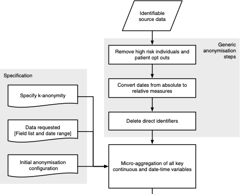
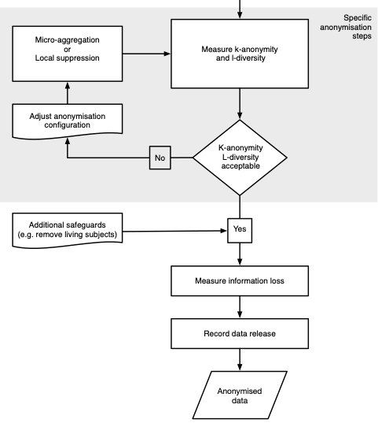
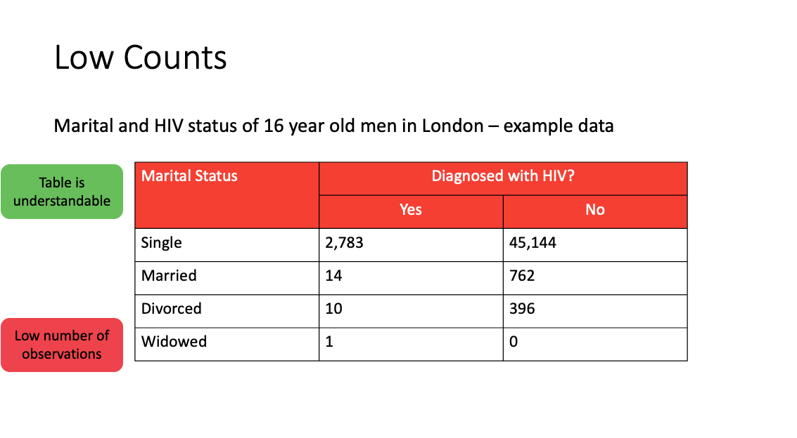
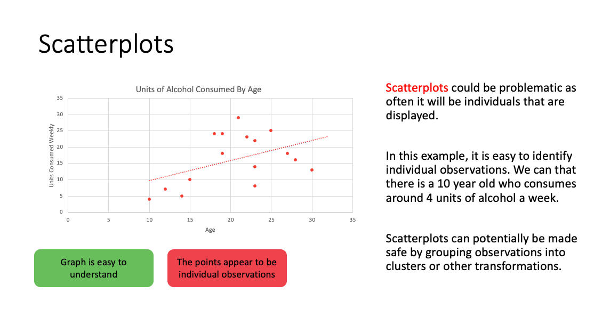

Safe data
Working with health data
Five Safes
We follow the ‘Five Safes’ approach to managing data and information security. This means that we don’t rely on just the ‘safety’ of the data but also take into account the following:
Safe People
- all individuals have substantive contracts or educational relationships with higher education or NHS institutions
- those working need to have evidence of experience of working with such data (e.g. previous training, previous work with ONS, data safe havens etc.) or they need a supervisor who can has similar experience
- those working need to undergo training in information governance and issues with statistical disclosure control (SDC)
Safe Projects
- projects must ‘serve the public good’
- projects must meet relevant HRA and UCLH research and ethics approvals
- service delivery work mandated as per usual trust processes
Safe Settings
- working at UCLH in the NHS on approved infrastructure
- UCLH local and remote desktops
- UCLH Data Science Desktop
- Generic Application Development Environment (GADE)
Safe Outputs
- outputs (e.g. reports, figures and tables) must be non-disclosing
- outputs should remain on NHS systems initially
- a copy of all outputs that are released externally (documents) should be stored in one central location so that there is visibility for all
Safe Data
- direct identifiers (hospital numbers, NHS numbers, names etc) should be masked unless there is an explicit justification for their use
- data releases are proportionate (e.g. limited by calendar periods, by patient cohort etc.)
- further work to obscure or mask the data is not necessary given the other safe guards (as per the recommendation by the UK data service)
The majority of this content is derived and adapted from the Safe Data Access Professional’s Working group, and we strongly recommend reviewing their handbook]

Five safes at UCLH
Practically although this means that we are judging your data safety on more than just the qualities of the data, we are able to work with data that would otherwise be considered unsafe. The plot below demonstrates this by comparing the effort we would have to expend on safety if we wanted to release data on the internet. This means that we lose all the other 4 safes.

Safe data without the other 4 safes
- Anonymisation
- Pseudonymisation
- De-identification
Anonymisation (is really hard)
Methods include Generalised Adversarial Networks, differentially-private Bayesian generative models, and Statistical Disclosure Control
Statistical Disclosure Control
Set thresholds for
- k-anonymity: counts the number of individuals identified by the intersection of key variables
- l-diversity: counts how varied other sensitive fields are within a k-anonymous group
Then define
- direct identifiers
- key variables (indirect identifiers)
- sensitive fields
- non-identifying variables


Types of disclosure
- Primary disclosure
- Inferring the identity, and/or information about, a data subject from a single source of data.
- Secondary disclosure (‘attribute’)
- Deriving the identity, and/or information of, a data subjecting by combining two or more sources of information together.
Safe outputs
Approaches to defining safe outputs
- Rules-based
- Users are given a set of fixed rules about what can and cannot be released, if the statistical output presented by the user meets the criteria it is released.
- Principles-based
- An assessment of risk takes place, and a decision is made as to whether the statistical output presented ‘safe’ to release or not? (in accordance with the Five Safes ‘Safe Output’ element).
Frequency tables
Rules-based - Minimum cell count - All counts should be unweighted
Principles-based - Threshold is a ‘rule-of-thumb’ - The units and data being presented should be considered
Frequencies can be presented in many different ways including tables, histograms, pie charts, bar charts. The guidance for frequency tables will also apply for these.


Graphs and Figures
Example issues include
- histograms: often low counts in the tails of the distribution, the maximum and minimum values may also be shown.
- scatter plots: by definition are plots of individuals (also residual plots); consider grouping
